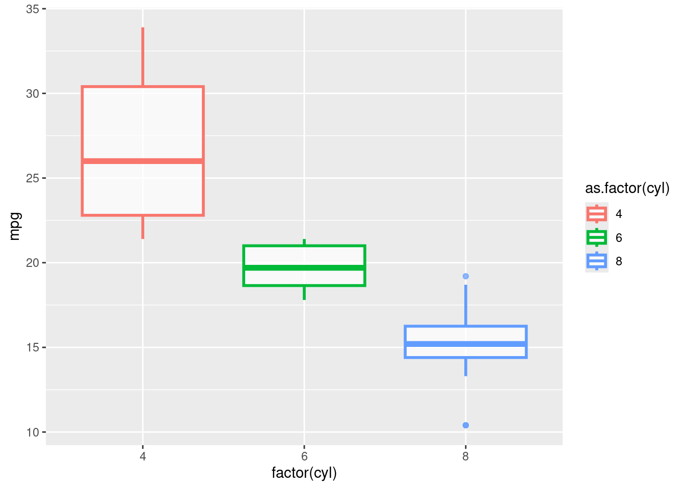

Capítulo 6 Gráficos e visualização de dados
A visualização de dados é fundamental na análise estatística, permite visualizar relações e padrões que podem ser relevantes para o conjunto de dados.
6.1 Gráficos básicos com graphics
Considere os dados mtcars.
1. plot(): Dispersão, linhas, etc.
plot(x = mtcars$wt, y = mtcars$mpg, # dados
main = "Consumo vs Peso", # título principal
xlab = "Peso do carro", ylab = "MPG", # rótulos dos eixos
col = "blue", pch = 19, cex = 1.2) # cor, tipo e tamanho dos pontos
- type = “p” (pontos), “l” (linhas), “b” (pontos + linhas), “n” (nada)
- pch = símbolo do ponto (1 a 25 ou letras, ex: “*“), cex = tamanho
- col = cor, aceita nomes ou códigos hexadecimais
2. hist(): Histograma
hist(mtcars$mpg,
main = "Distribuição de MPG",
xlab = "MPG",
col = "lightblue", border = "white",
breaks = 10)
- breaks: número de bins
- freq = FALSE: mostra densidade em vez de contagem
3. boxplot(): Boxplots
boxplot(mpg ~ cyl, data = mtcars,
main = "MPG por número de cilindros",
xlab = "Cilindros", ylab = "MPG",
col = c("lightgreen", "lightblue", "pink"))
- Fórmulas permitem separar por grupos
- Pode usar horizontal = TRUE
4. barplot(): Barras
counts <- table(mtcars$cyl)
barplot(counts,
main = "Frequência de Cilindros",
col = "orange", border = NA)- Também aceita valores contínuos
- Pode usar horiz = TRUE para barras horizontais
Personalizações gerais:
Títulos e eixos
- main, sub, xlab, ylab: título principal, subtítulo, rótulos dos eixos
- xlim, ylim: limites dos eixos, ex: xlim = c(0, 10)
- axes = FALSE: remove eixos (útil para desenhar personalizados com axis())
Cores e símbolos
- col: cor dos pontos, barras, etc.
- pch: tipo de ponto (0 a 25), também pode usar “*” ou “+”
- cex: tamanho do símbolo
- lty, lwd: tipo e espessura de linha
Funções auxiliares úteis
- abline(h = …) ou abline(v = …): adiciona linhas horizontais/verticais
- text(x, y, labels): adiciona texto manualmente
- legend(“topright”, legend = …, col = …, pch = …): adiciona legenda
- par(mfrow = c(2,2)): permite múltiplos gráficos em uma janela
Exemplo:
par(mfrow = c(2, 2)) # 2x2 gráficos
plot(mtcars$wt, mtcars$mpg,
main = "MPG vs Peso", xlab = "Peso", ylab = "MPG",
col = "darkgreen", pch = 16)
hist(mtcars$mpg, main = "Histograma de MPG",
freq = F, breaks = 5, col = "lightblue")
boxplot(mpg ~ cyl, data = mtcars,
main = "MPG por cilindros",
col = "lightgreen", horizontal = T)
barplot(table(mtcars$gear), main = "Contagem de marchas",
col = "salmon", horiz = T)Exemplo:
# Dados de exemplo
x <- mtcars$wt # peso
y <- mtcars$mpg # milhas por galão
# Gráfico básico com várias personalizações
plot(x, y,
type = "p", # tipo de gráfico: pontos
main = "MPG vs Peso do carro", # título principal
sub = "Dados do conjunto mtcars", # subtítulo
xlab = "Peso (1000 lbs)", # rótulo do eixo x
ylab = "Milhas por galão (MPG)", # rótulo do eixo y
xlim = c(1.5, 5.5), # limites do eixo x
ylim = c(10, 35), # limites do eixo y
col = "blue", pch = 19, cex = 1.2, # cor, tipo e tamanho dos pontos
axes = FALSE # remove eixos para desenhar manualmente
)
# Adicionando eixos personalizados
axis(1, at = seq(2, 5, by = 0.5)) # eixo x com marcações
axis(2, las = 1) # eixo y com rótulos na horizontal
# O eixo é colocado da seguinte forma:
# 1=abaixo, 2=esquerda, 3=acima e 4=direita.
box()
# desenha a caixa ao redor do gráfico
# Adicionando linhas de referência
abline(h = 20, col = "red", lty = 2, lwd = 2)
# linha horizontal em y = 20
abline(v = 3.5, col = "darkgreen", lty = 3, lwd = 2)
# linha vertical
# Adicionando texto no gráfico
text(x = 3.8, y = 33, labels = "Alto consumo",
col = "purple", cex = 0.9)
# Adicionando legenda
legend("topright",
legend = c("Carros", "MPG = 20", "Peso = 3.5"),
col = c("blue", "red", "darkgreen"),
pch = c(19, NA, NA),
lty = c(NA, 2, 3),
lwd = c(NA, 2, 2),
bty = "n") # sem borda na legendaExercícios
1. Considerando o conjunto de dados mtcars disponível no R, crie um gráfico de dispersão entre wt (peso) e mpg (milhas por galão) do dataset mtcars, com os seguintes elementos:
- Título: “Relação entre peso e consumo”
- Eixo X: “Peso (1000 lbs)”
- Eixo Y: “Consumo (milhas/galão)”
2. Utilize o mesmo gráfico do exercício anterior, mas agora:
- Defina os limites do eixo X entre 1 e 6
- Defina os limites do eixo Y entre 10 e 35
- Use pch = 16 para pontos preenchidos
- Desative os eixos automáticos e crie eixos personalizados com axis()
3. Usando o mesmo gráfico do exercício anterior, mas agora:
- Adicione uma linha horizontal em mpg = 20
- Adicione uma linha vertical em wt = 3
4. Ainda no gráfico anterior:
- Adicione o nome dos carros ao lado dos pontos com text()
- Use pos = 4 para colocar o texto à direita dos pontos
5. Crie um gráfico de dispersão entre hp (potência) e mpg, com:
- Cores diferentes para carros com 4, 6 e 8 cilindros (use cyl)
- Uma legenda explicando as cores
- Título: “Consumo vs Potência por número de cilindros”
6. Crie uma visualização com 4 gráficos diferentes em uma janela 2x2:
- plot(mpg ~ wt)
- hist(mtcars$mpg)
- boxplot(mpg ~ cyl)
- plot(density(mtcars$mpg))
6.2 Gráficos com ggplot2
É um pacote muito usado em visualizações gráficas em estatística. Possibilita construir os gráficos de maneira modular, combinando diferentes camadas e componentes.
Conceitos básicos do ggplot2:
1. Camadas (layers): o gráfico é feito em camadas — primeiro define os dados e os eixos, depois adiciona geometrias, escalas, temas, entre outros.
2. Gramática dos Gráficos:
Dados (data)
Mapeamentos estéticos (aes, de aesthetics): relacionam variáveis aos elementos visuais do gráfico (eixo x, y, cor, tamanho, etc.)
Geometrias (geom_*): definem o tipo de gráfico, como pontos, barras, linhas, boxplots, etc.
Opcionais: Temas (theme): ajustam a aparência visual; Rótulos (labs): define títulos, rótulos e legendas; Facetas (facet_*): permitem dividir os dados em subgráficos.
Estrutura geral:
ggplot(data, aes(...)) + → base e mapeamento
geom_*() + → tipo de gráfico
theme_*() ou + labs() → (opcional) ajustes de estiloPara carregar o pacote:
Exemplo de gráficos com diferentes geometrias:

# aes() define os eixos x e y (aqui: wt e mpg)
# geom_point() desenha os pontos
## Gráfico de linhas:
ggplot(data = mtcars, aes(x = wt, y = mpg)) +
geom_line()
# geom_line() conecta os pontos com uma linha
## Histograma:
ggplot(data = mtcars, aes(x = mpg)) +
geom_histogram()## `stat_bin()` using `bins = 30`. Pick better value with `binwidth`.# geom_histogram() faz um histograma
## Gráfico de barras:
ggplot(data = mtcars, aes(x = as.factor(cyl))) +
geom_bar()
# x = as.factor(cyl): transforma os números de cilindros em categorias
# geom_bar(): conta quantas vezes cada valor aparece
# (por padrão, usa stat = "count")
## Boxplot:
# para uma variável
ggplot(data = mtcars, aes(y = mpg)) +
geom_boxplot()

# as.factor(cyl) transforma o número de cilindros em categorias
# geom_boxplot() mostra distribuição de valoresPersonalizações adicionais:
1. Cores, formato, tamanho, transparência
## Gráfico de dispersão:
ggplot(data = mtcars, aes(x = wt, y = mpg)) +
geom_point(alpha = 0.8, shape = 22, color = "red",
fill = "blue", size = 4)
# alpha -> transparencia: valor de 0 a 1
# shape -> formato do ponto: valor de 0 a 25
# color -> cor dos pontos (ou borda, se for o caso)
# fill -> cor do interior do ponto. Formas que aceitam fill: shape 21 a 25
# size -> tamanho dos pontos
# Gráfico de linhas:
ggplot(mtcars, aes(x = wt, y = mpg)) +
geom_line(color = "blue", size = 1.2, linetype = "dashed")## Warning: Using `size` aesthetic for lines was deprecated in ggplot2 3.4.0.
## ℹ Please use `linewidth` instead.
## This warning is displayed once every 8 hours.
## Call `lifecycle::last_lifecycle_warnings()` to see where this warning was
## generated.# color: cor da linha ("blue", "red", etc.)
# size: espessura da linha
# linetype: tipo da linha ("solid", "dashed", "dotted",
# "dotdash", "longdash", etc.)
# Gráfico de histograma:
ggplot(mtcars, aes(x = mpg)) +
geom_histogram(fill = "skyblue", color = "black",
alpha = 0.7, binwidth = 5)
# fill: cor de preenchimento das barras
# color: cor da borda das barras
# alpha: transparência (0 a 1)
# binwidth: largura de cada barra
# Gráfico de barras:
ggplot(mtcars, aes(x = as.factor(cyl))) +
geom_bar(fill = "lightsalmon", color = "black", width = 0.7)# fill: cor do interior das barras
# color: borda das barras
# width: largura das barras
# Gráfico Boxplot:
ggplot(data = mtcars, aes(x = as.factor(cyl), y = mpg)) +
geom_boxplot(alpha = 0.7, size = 1,
fill = "skyblue", color = "darkblue",
outlier.color = "red", outlier.shape = 21,
outlier.fill = "yellow", outlier.size = 3,
outlier.stroke = 1.5)# alpha -> transparencia: valor de 0 a 1 (0 = transparente, 1 = opaco).
# size -> espessura das bordas
# fill = "skyblue" -> Cor de preenchimento da caixa.
# color = "darkblue" -> Cor da borda do boxplot.
# outlier.color = "red" -> Cor da borda dos outliers.
# outlier.shape = 21 -> Formato dos pontos outliers.
# Formas de 21 a 25 aceitam fill.
# outlier.fill = "yellow" -> Cor do interior dos outliers
# (se outlier.shape permite fill).
# outlier.size = 3 Tamanho dos pontos outliers.
# outlier.stroke = espessura das bordas dos outliers
## Outros tipos de cores podem ser encontradas em colors().Cores variando conforme os grupos:
## Cores do preenchimento variando conforme os grupos: fill
ggplot(mtcars, aes(x = wt, y = mpg, fill = as.factor(cyl))) +
geom_boxplot(alpha = 0.7, size = 1, color = "darkblue")
# fill = as.factor(cyl): cores do interior das caixas
# variam conforme as categorias de cilindros
## Cores das bordas variando conforme os grupos: color
ggplot(mtcars, aes(x = factor(cyl), y = mpg, color = as.factor(cyl))) +
geom_boxplot(alpha = 0.7, size = 1, fill = "white")
Para controlar manualmente as cores associadas aos grupos (categorias), podemos usar scale_fill_manual() para o fill e scale_color_manual() para o color. Isso vale para formas preenchíveis, como boxplots, barras, pontos com shape 21–25, etc.
## Cores do preenchimento manuais variando conforme os grupos: fill
ggplot(mtcars, aes(x = wt, y = mpg, fill = as.factor(cyl))) +
geom_boxplot(alpha = 0.7, size = 1, color = "darkblue") +
scale_fill_manual(values = c("4" = "lightgreen", "6" = "lightblue",
"8" = "pink")) # scale_fill_manual() → define manualmente as cores do interior.
## Cores das bordas manuais variando conforme os grupos: color
ggplot(mtcars, aes(x = factor(cyl), y = mpg, color = as.factor(cyl))) +
geom_boxplot(alpha = 0.7, size = 1, fill = "white") +
scale_color_manual(values = c("4" = "darkgreen", "6" = "steelblue",
"8" = "darkred")) 
2. Legendas, rótulos e limites
Com o scale_fill_manual() e o scale_color_manual(), podemos modificar também as informações das legendas.
ggplot(mtcars, aes(x = wt, y = mpg, fill = as.factor(cyl))) +
geom_boxplot(alpha = 0.7, size = 1, color = "darkblue") +
scale_fill_manual(
values = c("4" = "lightgreen", "6" = "lightblue", "8" = "pink"),
labels = c("4 cilindros", "6 cilindros", "8 cilindros"),
name = "Categorias de cilindros"
)
ggplot(mtcars, aes(x = factor(cyl), y = mpg, color = as.factor(cyl))) +
geom_boxplot(alpha = 0.7, size = 1, fill = "white") +
scale_color_manual(
values = c("4" = "lightgreen", "6" = "lightblue", "8" = "pink"),
labels = c("4 cilindros", "6 cilindros", "8 cilindros"),
name = "Categorias de cilindros"
)
Para modificar rótulos, nomes de títulos e nomes dos eixos, podemos utilizar a função labs(). Já para modificar valores minimos e maximos dos eixos, usamos xlim() e ylim().
## Gráfico de dispersão:
ggplot(data = mtcars, aes(x = wt, y = mpg)) +
geom_point(alpha = 0.8, shape = 22, color = "red",
fill = "blue", size = 4) +
labs(
title = "Relação entre peso e consumo de combustível",
subtitle = "Dados do dataset mtcars",
x = "Peso do carro (1000 lbs)",
y = "Milhas por galão (mpg)",
caption = "Fonte: Motor Trend US magazine (1974)"
) +
xlim(1, 6) +
ylim(10, 35)
# labs() possibilita adicionar:
# - title: título do gráfico
# - subtitle: subtítulo
# - x, y: rótulos dos eixos
# - caption: legenda inferior (útil para fonte ou nota)
# xlim() e ylim() -> Definem os limites visuais dos eixos x e y.
# Dados fora desses limites são cortados3. Temas:
Para persoalizar temas, podemos usar theme_*() ou theme().
theme_*(): Funções predefinidas para aplicar temas específicos, com ajustes padrão. Você escolhe um tema e aplica com um único comando. Aplicam um conjunto pré-definido de estilos para o gráfico, como fundo, eixos, grid, etc.theme(): Permite personalizações detalhadas e específicas, configurando cada elemento do gráfico individualmente.
Exemplo: Usando theme_*()
ggplot(data = mtcars, aes(x = wt, y = mpg)) +
geom_point(alpha = 0.8, shape = 22, color = "red",
fill = "blue", size = 4) +
labs(
title = "Relação entre peso e consumo de combustível",
subtitle = "Dados do dataset mtcars",
x = "Peso do carro (1000 lbs)",
y = "Milhas por galão (mpg)",
caption = "Fonte: Motor Trend US magazine (1974)"
) +
xlim(1, 6) +
ylim(10, 35) +
theme_minimal()
Você pode substituir theme_minimal() por qualquer uma destas funções para estilos diferentes:
| Tema | Estilo |
|---|---|
theme_gray() |
Padrão do ggplot2 (cinza claro com grade branca) |
theme_bw() |
Fundo branco com linhas de grade |
theme_minimal() |
Visual leve, sem bordas e poucas linhas |
theme_classic() |
Fundo branco com eixos e borda, sem grade |
theme_void() |
Quase tudo removido (bom para mapas, logos, etc.) |
theme_light() |
Semelhante ao bw(), mas mais suave |
theme_dark() |
Fundo escuro com texto claro |
Exemplo: Usando theme()
ggplot(mtcars, aes(x = factor(cyl), y = mpg, color = as.factor(cyl))) +
geom_boxplot(alpha = 0.7, size = 1, fill = "white") +
labs(
title = "Boxplot do mpg por valor de cyl",
x = "cyl",
y = "Milhas por galão (mpg)"
) +
scale_color_manual(
values = c("4" = "lightgreen", "6" = "lightblue", "8" = "pink"),
labels = c("4 cilindros", "6 cilindros", "8 cilindros"),
name = "Categorias de cilindros"
) +
theme_minimal() +
theme(
plot.title = element_text(size = 16, face = "bold", color = "darkblue"),
axis.title = element_text(size = 12, color = "darkblue"),
axis.text = element_text(size = 12, color = "darkblue")
)
# - plot.title = element_text(size = 16, face = "bold"):
# Altera o título do gráfico: tamanho da fonte (size = 16)
# e o estilo como negrito (face = "bold").
# - axis.text = element_text(size = 14, color = "darkblue"):
# Muda o tamanho e a cor dos números dos eixos (x e y).
# panel.grid.major = element_line(color = "gray90")
# Altera a cor das linhas principais da grade (linhas de referência horizontais e verticais).Outras personalizações podem ser encontradas em: help(theme).
Exemplo: Gráfico ggplot com várias personalizações
# Dados base
dados <- mtcars
# Gráfico ggplot
ggplot(dados, aes(x = wt, y = mpg)) +
# Pontos
geom_point(color = "blue", size = 3) +
# Linha horizontal de referência (y = 20)
geom_hline(yintercept = 20, color = "red", linetype = "dashed",
linewidth = 1) +
# Linha vertical de referência (x = 3.5)
geom_vline(xintercept = 3.5, color = "darkgreen",
linetype = "dotted", linewidth = 1) +
# Texto anotativo
annotate("text", x = 3.8, y = 33, label = "Alto consumo",
color = "purple", size = 4) +
# Limites dos eixos
xlim(1.5, 5.5) +
ylim(10, 35) +
# Títulos e rótulos
labs(
title = "MPG vs Peso do carro",
subtitle = "Dados do conjunto mtcars",
x = "Peso (1000 lbs)",
y = "Milhas por galão (MPG)",
caption = "Fonte: mtcars"
) +
# Tema para ajustar aparência geral
theme_minimal() +
theme(
plot.title = element_text(face = "bold", size = 14),
axis.title = element_text(size = 12)
)Exercícios
Considere o conjunto de dados mpg do pacote ggplot2.
1. Crie um gráfico de dispersão com geom_point() mostrando a relação entre displ (cilindrada) e hwy (consumo em estrada).
- Adicione título e rótulos aos eixos.
- Use tamanho 3 e cor azul para os pontos.
- Use o tema theme_minimal().
2. Considerando novamente o gráfico de dispersão anterior:
- Faça com que a cor dos pontos varie conforme a variável class.
- Aumente o tamanho dos pontos para 4 e reduza a sua opacidade para 0.5 (alpha)
3. Considerando novamente o gráfico de dispersão anterior:
- Faça com que a cor dos pontos varie conforme a variável class.
- Use uma paleta manual de cores com scale_color_manual() com pelo menos 3 cores distintas.
4. Considerando novamente o gráfico de dispersão anterior:
- Adicione uma linha horizontal em hwy = 25 e uma linha vertical em displ = 4 (ambas devem ser tracejadas e vermelhas)
- Um texto no canto superior direito dizendo “Meta de eficiência”
- Limite o eixo X entre 2 e 6
- Limite o eixo Y entre 15 e 40
5. Crie um gráfico de barras com a contagem de carros por class.
- Use fill =
classpara mudar a cor de preenchimento das barras. - Mude manualmente as cores de preenchimento com scale_fill_manual().
- Remova a legenda e use o tema theme_bw().
6. Crie um boxplot de hwy por class.
- Use fill = class e color = drv para mostrar grupos diferentes.
- Personalize com scale_fill_manual() e scale_color_manual().
6.3 Gráficos Interativos com plotly
O plotly é um pacote que transforma gráficos em interativos. Ele possibilita:
- transformar gráficos ggplot em interativos
- criar gráficos interativos
- Alguns de seus recursos: observar os valores do gráfico com o mouse, dar zoom, arrastar, girar imagens 3D, exportar.
Primeiramente instalar e carregar o pacote:
Transformar um gráfico ggplot2 em interativo
library(ggplot2)
library(plotly)
# Gráfico com ggplot2
p <- ggplot(mpg, aes(x = displ, y = hwy, color = class)) +
geom_point()
# Tornar interativo
ggplotly(p)Recursos:
- desmarcar itens da legenda
- download do gráfico
- zoom em uma região específica
- arrastar o gráfico
- caixa de seleção
- laço de seleção
- resetar eixos
- mostrar os dados mais próximos ao passar o mouse
- comparar dados ao passar o mouse
Criando gráficos diretamente com plot_ly()
## Gráfico de dispersão:
plot_ly(data = mtcars,
x = ~wt,
y = ~mpg,
type = "scatter",
mode = "markers")# type = "scatter" → gráfico de dispersão
# mode = "markers" → só pontos (sem linhas)
## Gráfico de linhas
plot_ly(data = economics,
x = ~date,
y = ~unemploy,
type = "scatter",
mode = "lines")# mode = "lines": só linhas
## Gráfico de linhas + pontos
plot_ly(data = economics,
x = ~date,
y = ~unemploy,
type = "scatter",
mode = "lines+markers")## Gráfico de barras
# Contagem das frequencias
# library(dplyr)
df_contagem <- mpg %>%
count(class)
# Gráfico com as contagens
plot_ly(data = df_contagem,
x = ~class,
y = ~n,
type = "bar") # type = "bar": gráfico de barras verticais
# x = ~class: mostra a frequência de cada tipo de carro
## Histograma - com frequencias
plot_ly(data = mpg,
x = ~hwy,
type = "histogram")# type = "histogram": conta quantos valores caem em cada faixa de hwy
# x = ~hwy: cria histograma da variável hwy (consumo em estrada)
## Histograma - com densidades
plot_ly(data = mpg,
x = ~hwy,
type = "histogram",
histnorm = "probability density",
xbins = list(size = 5)) # histnorm = "probability density" Normaliza a altura das barras para representar densidade (área = 1)
# xbins = list(size = 2) Define a amplitude dos intervalos (ex: de 2 em 2 unidades)
## Boxplot
plot_ly(data = mpg,
x = ~class,
y = ~hwy,
type = "box")Personalizações comuns:
# Cores automáticas por grupo:
color = ~class
# Título e rótulos:
layout(title = "Meu gráfico",
xaxis = list(title = "Eixo X"),
yaxis = list(title = "Eixo Y"))
# Texto ao passar o mouse:
text = ~paste("MPG:", mpg), hoverinfo = "text"Exemplo: gráfico de dispersão com personalizações
library(plotly)
# Usando o dataset mpg
plot_ly(data = mpg,
x = ~displ, # eixo X: cilindrada
y = ~hwy, # eixo Y: consumo na estrada
type = "scatter", # gráfico de dispersão
mode = "markers", # só pontos
color = ~class, # cor por tipo de carro
text = ~paste("Classe:", class,
"<br>Cilindrada:", displ,
"<br>Consumo (hwy):", hwy), # texto ao passar o mouse
hoverinfo = "text" # mostra só o texto definido
) %>%
layout(title = "Cilindrada vs Consumo (Estrada)",
xaxis = list(title = "Cilindrada (litros)"),
yaxis = list(title = "Consumo na estrada (MPG)"))Exercícios
1. Usando o pacote plotly e o dataset iris, crie:
- Um gráfico de dispersão entre
Sepal.LengthePetal.Length. Personalize com: (1) Cores dos pontos por Species; (2) Texto ao passar o mouse nos pontos com valores de todas as variáveis; (3) Título e rótulos dos eixos. - Um gráfico de barras das frequências de
Species. Personalize com: (1) Cores porSpecies; (2) Rótulos e título. - Um histograma da variável
Sepal.Width. Personalize com: (1) Densidades no eixo das ordenadas; (2) Amplitude dos intervalos de 0.5; (3) Rótulos nos eixos. - Boxplots da variável
Sepal.WidthporSpecies. Personalize com: (1) Cores porSpecies; (2) Rótulos e título.
2. Usando o pacote plotly e o dataset airquality, plote o gráfico de linhas da variação da temperatura (Temp) ao longo dos dias (Day) no mês de maio. Personalize com: (1) Modo = “lines+markers”; (2) Título: “Temperatura em maio”; (3) Rótulos dos eixos.